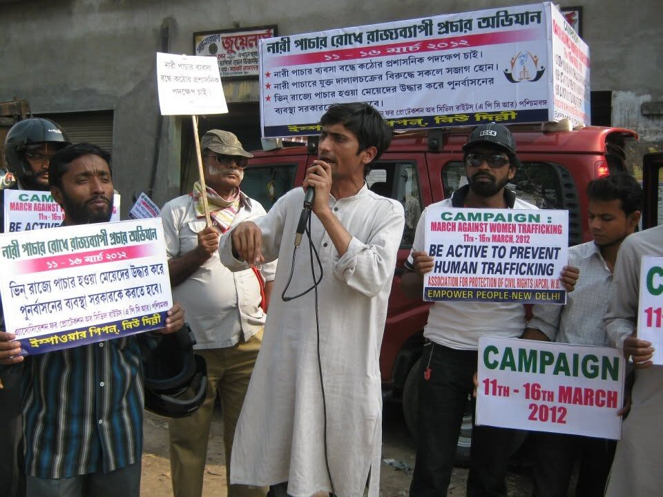
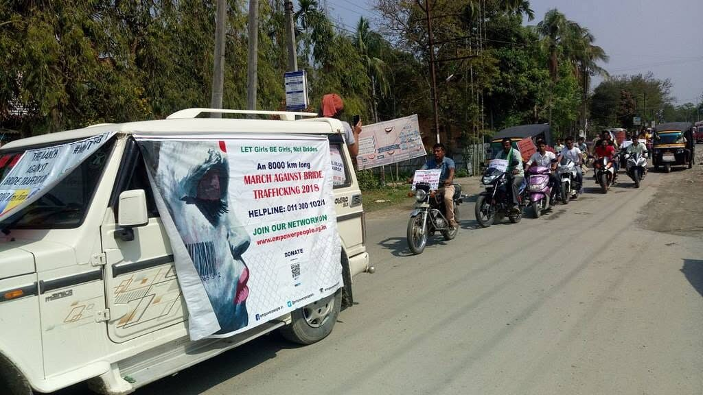
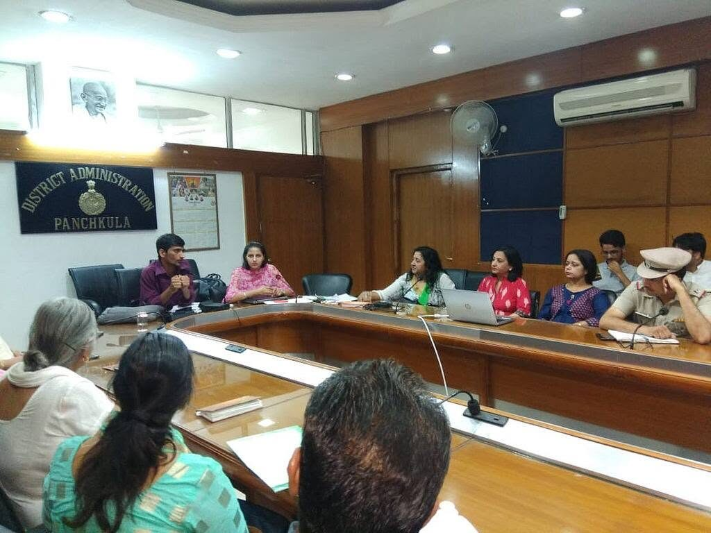
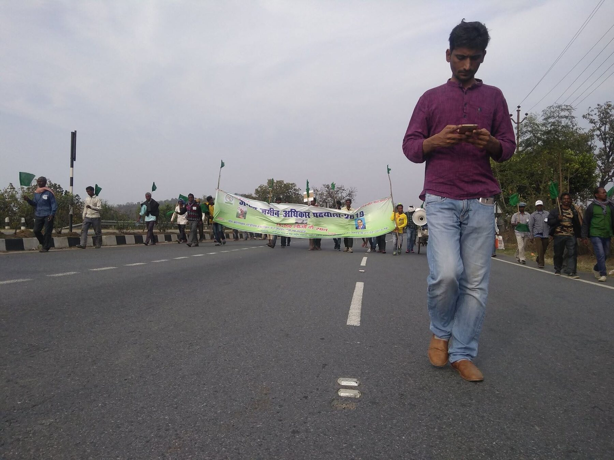
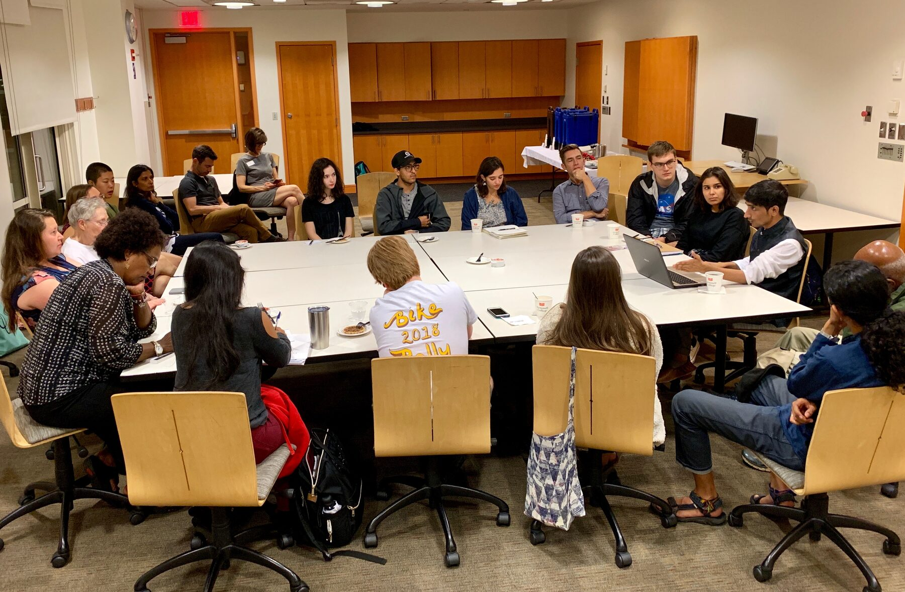
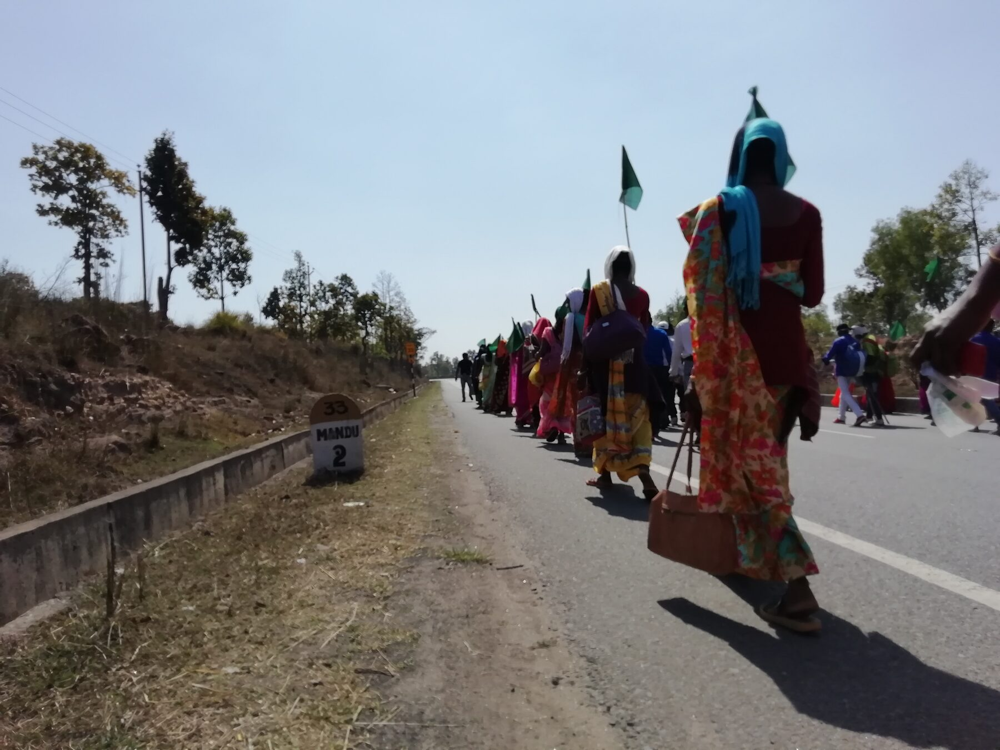

March 1 — 2006
March Against Female Feticide
The first march addressed female feticide in Haryana, one of India’s most skewed states for sex ratio at birth. The route traversed districts where the practice was most entrenched, building public pressure for enforcement.
March 2 — 2012

March Against Bride Trafficking
A 4,600 km on-foot march across Assam and West Bengal — the two states from which young women and girls are trafficked as brides to Haryana and other destination states. The march documented trafficking routes, met survivor families, and drew media attention to bride trafficking as a structural consequence of son preference.
- Recognition of bride trafficking as a distinct form of human trafficking
- Inter-state coordination between source and destination state police
- Community-level prevention in source villages
March 3 — 2018

National March Against Bride Trafficking
The largest march — a 16,000 km route across ten states from Assam to Himachal Pradesh, traversing both source and destination states for bride trafficking. The march covered 70 districts, documenting trafficking corridors and building multi-state coalitions. It is among the longest on-foot advocacy marches in independent India’s history.
The route followed trafficking corridors — the same pathways used by brokers to move girls across India’s borders with Myanmar, Nepal, Bhutan and Bangladesh — and reaching destination states where purchased brides live.

March 4 — 2019

Jungle-Jameen Adhikar Padyatra
A mass march of approximately 10,000 adivasi and forest-dependent communities from Hazaribagh to the Raj Bhavan in Ranchi, demanding enforcement of the Forest Rights Act and protection of community land rights. Organised under the National Alliance of People’s Movements Jharkhand (NAPJ), Shafiqur Rahman Khan led the march as a practitioner-organiser.
- Full implementation of the Forest Rights Act, 2006
- No eviction of forest-dwelling communities
- Community forest resource rights for gram sabhas
- Halt to acquisition of adivasi land for industry


The route, 2019
